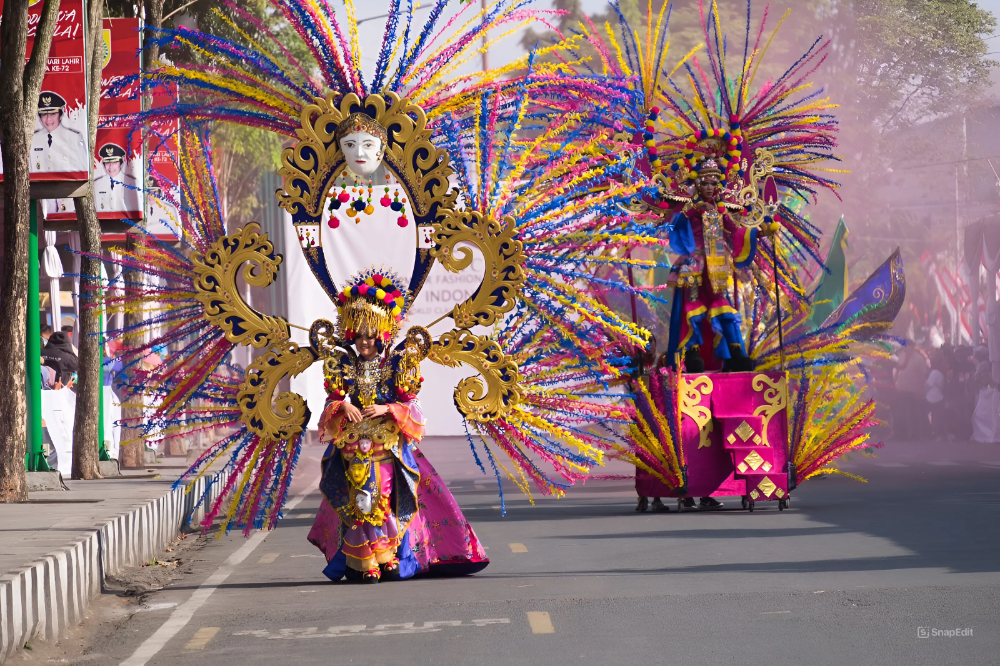
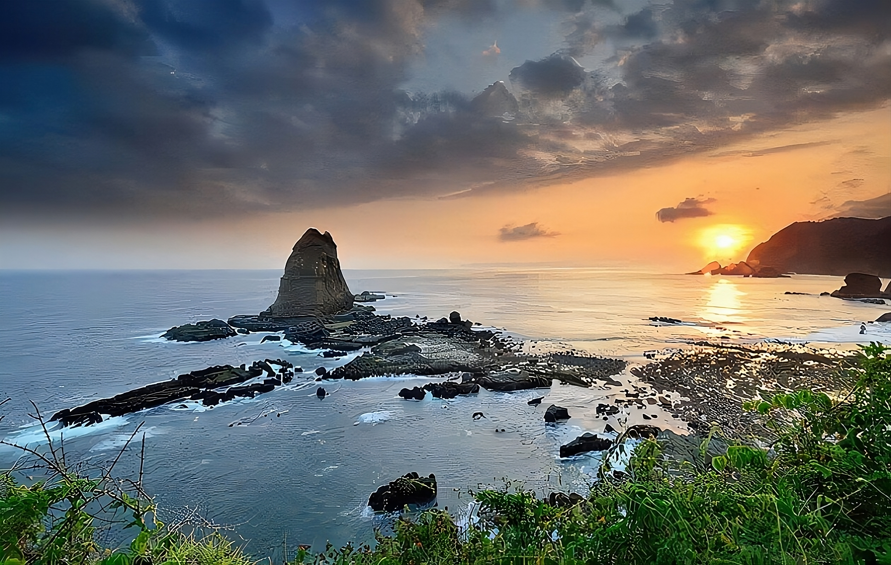
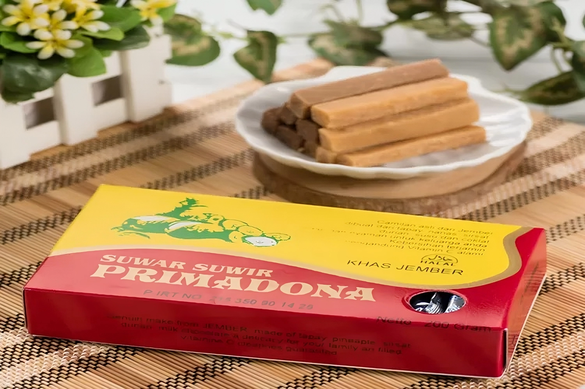

Sejarah Jember
Jember merupakan bagian dari Kerajaan Majapahit dan Kesultanan Mataram, dengan kehidupan masyarakat yang berfokus pada pertanian subsisten dan budaya lokal.
VOC mulai mengeksplorasi Jember karena potensi agrarisnya. Interaksi dengan pedagang Eropa membawa pengaruh baru dalam ekonomi dan pertanian.
Sejak 1859, Jember dikenal sebagai daerah penghasil kopi, dengan Belanda membuka lahan perkebunan yang menarik banyak imigran untuk bekerja.
Pada tahun 1890, Jember menjadi daerah produksi utama tembakau, terutama jenis Besuki Na-Oogst, yang diekspor ke Eropa dan meningkatkan pendapatan daerah.
Pembangunan infrastruktur seperti jalan dan rel kereta api dimulai untuk mendukung pertumbuhan ekonomi dan meningkatkan aksesibilitas.
Jember menjadi pusat pertempuran antara pejuang kemerdekaan dan pasukan kolonial Belanda, berkontribusi pada perjuangan untuk kemerdekaan Indonesia.
Setelah merdeka, Jember berkembang pesat di sektor pendidikan, pariwisata, dan industri kreatif, sambil tetap fokus pada pertanian sebagai salah satu sektor utama.
Tentang Website
Selamat datang di
Jember Keren, platform yang didedikasikan untuk memperkenalkan dan merayakan
keindahan budaya, wisata, dan kehidupan lokal Kabupaten Jember. Kami
berkomitmen untuk menghadirkan informasi terkini mengenai berbagai
warisan budaya, tradisi, acara, serta destinasi wisata yang menjadikan
Jember istimewa.
Website ini dirancang untuk membantu
pengunjung lokal maupun wisatawan mengenal lebih dekat pesona Jember,
mulai dari kekayaan seni dan budaya hingga tempat-tempat yang wajib
dikunjungi. Selain itu, kami juga menyajikan panduan perjalanan,
sejarah, serta cerita menarik yang mengungkap lebih dalam tentang
kehidupan masyarakat Jember.
Kami berharap, dengan adanya
platform ini, semua orang bisa menjelajahi dan merasakan keunikan yang
hanya bisa ditemukan di Jember. Selamat menikmati, dan semoga website
ini bermanfaat bagi Anda!